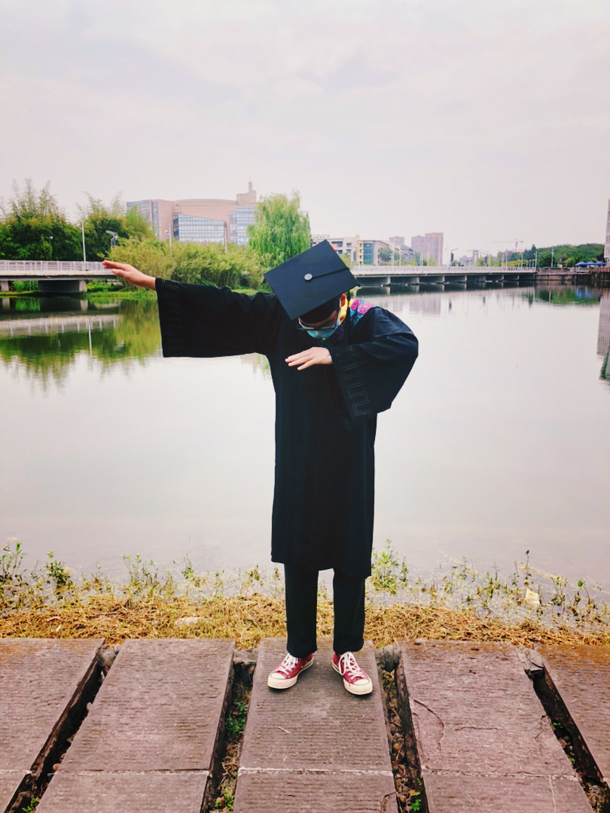

Hai Jiang received his B.E. degree from Sichuan University in 2020 and will receive his M.S. degree in 2023, supervised by Prof. Songchen Han. From 2022 to the present, he works as a research intern at Megvii Technology (Megvii Research Chengdu), supervised by Prof. Shuaicheng Liu, Dr. Yuhang Lu, and Dr. Haipeng Li.
My research interests include image restoration especially low-light image enhancement and image deblurring, and homography estimation.
